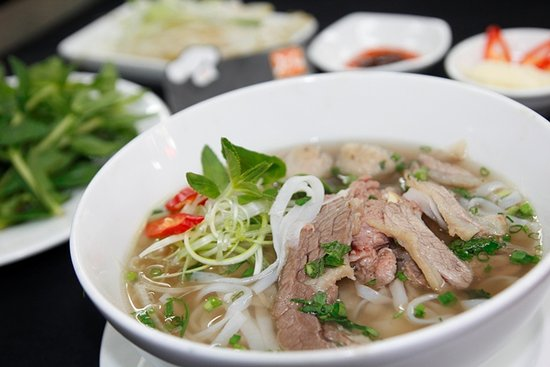
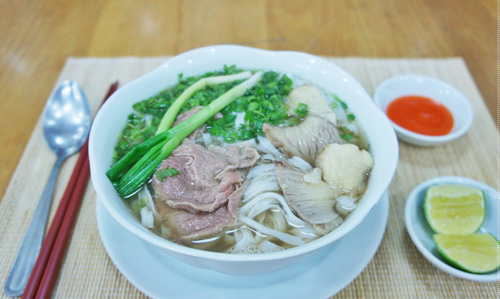
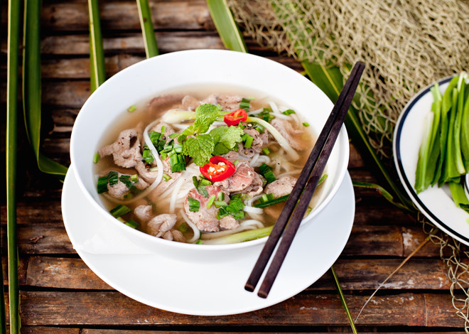

pho bo

pho bo

フォーはベトナムを代表する国民的料理です。 ベトナム人にとってソウルフードであり、一日3食フォーで済ませる人もいるほど生活に密着している料理です。 路上の屋台からレストラン、ホテルの朝食などベトナムのあらゆるところでフォーは食べられています。 原材料は米粉と水で、日本ではうどんに似ていることからベトナムうどんとも呼ばれています。 日本のうどんの中でも特に名古屋のきしめんに似ています。 1年で米が3回も収穫されているベトナム。 特に首都のハノイ北部では稲作が盛んにおこなわれています。 そんな米粉を使った料理といえばフォーです。 フォーはベトナムを代表する国民的料理で、ベトナム人にとってのソウルフードです。 一日3食フォーで済ませる人もいるほど生活に密着している料理で、路上の屋台からレストラン、ホテルの朝食などベトナムのあらゆるところでフォーは食べられています。
